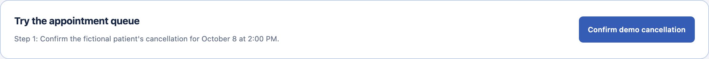
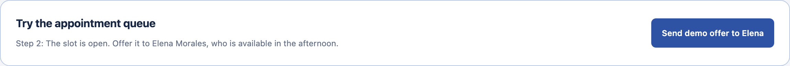
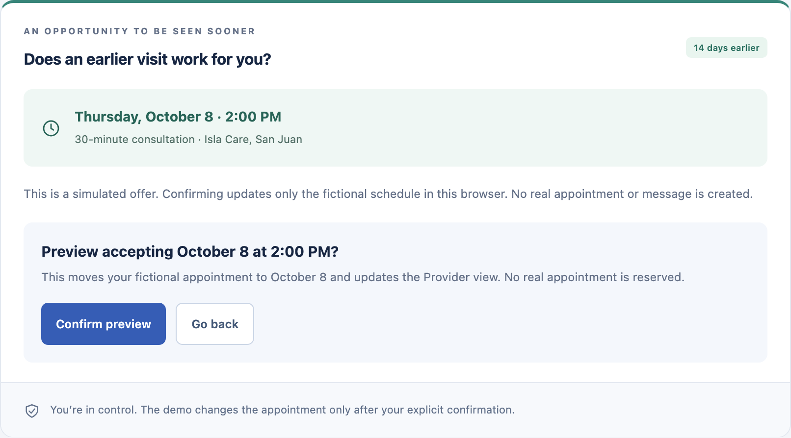
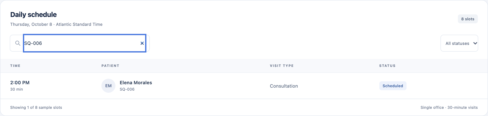

One opening.
A better next step.
Connecting a cancellation
to someone waiting for care.
A fictional story. A working, synthetic demo.
An empty appointment.
A patient still waiting.
A cancellation opens a slot.
Someone needs that time.
The missing connection costs attention, time, and opportunity.
Life changes.
The appointment can’t wait.
“Something came up.
I need to cancel.”
Her next step should be clear.
The office needs to know in time.
One cancellation.
Several loose ends.
“Who can take this slot?
Who has replied?”
Disconnected steps leave Ana
holding the whole workflow together.
The right opening.
Without the connection.
“I could come earlier…
if I knew.”
An available appointment only helps
when it reaches someone who can use it.
Connect the handoffs.
Keep people in control.
- 01ConfirmStaff releases the slot.
- 02OfferA waiting patient responds.
- 03UpdateThe schedule reflects acceptance.
One coordinated flow for patients, assistants, and providers.
Working browser simulation · English / Español · No account required
Ana confirms. The slot opens.
María’s request becomes a clear next action for staff.


Real POC captures · Synthetic fixtures use Adrián / Elena, not the story names. No patient self-cancel screen.
An offer. A choice. A confirmation.
Ana coordinates.
José stays in control.
- Staff sends a demo offer.
- Patient previews the move.
- Acceptance updates the queue.
Decline and help paths also work.
No message leaves the browser.

A schedule everyone can follow.
“I can see who’s coming
and what changed.”Dr. Rivera · fictional outcome

Less chasing.
More clarity.
| For | Before | With Smart Queue |
|---|---|---|
| Patients | Uncertainty | A clear offer and choice |
| Assistants | Disconnected follow-up | One visible workflow |
| Providers | Schedule ambiguity | An updated appointment list |
The POC demonstrates coordination. Time saved and access outcomes still need a real-world pilot.
Rules coordinate.
AI could clarify.
Explicit choices.
Cancel → offer → confirm → update.
Deterministic browser simulation.
Understand replies.
Potential EN/ES intent assistance
for ambiguous patient messages.
No AI runs in this POC. Future AI would never book or rank patients.
Smart Queue —
Less Waiting.
Better Care.
Explore the synthetic workflow.
Help us validate it with care teams.
Next: a measured pilot, secure persistence,
and optional language assistance. No AI runs today.